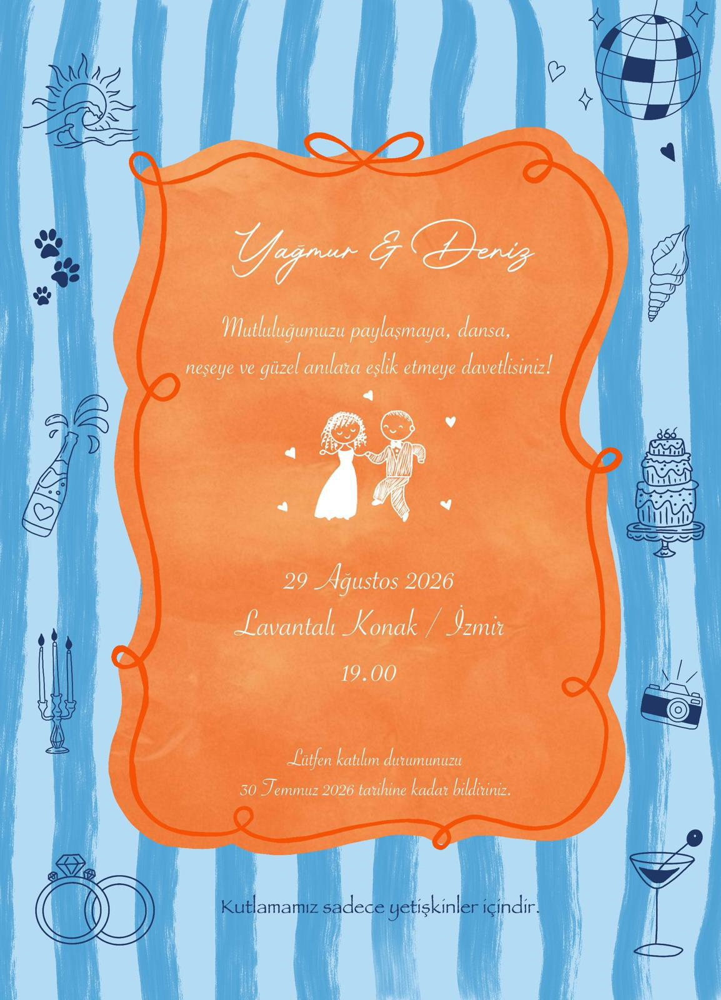

Konum & Ulaşım
Mekan: Lavantalı Konak
Akarca Mevkii, Seferihisar / İzmir
Google Haritalar ile Yol Tarifi AlLokasyon Rehberi
Adnan Menderes Havalimanı'ndan Geliş
Havalimanından çıktıktan sonra İZBAN banliyö hattına binerek Cumaovası Aktarma Merkezi durağında ininiz. Buradan hareket eden 775 numaralı Seferihisar ESHOT belediye otobüsü ile doğrudan ilçe merkezine ulaşım sağlayabilirsiniz. Havalimanından araçla gelecek misafirler için yol yaklaşık 50 dakika sürmektedir.
Özel Araç ile Ulaşım
İzmir-Çeşme otoyolundan ilerlerken Seferihisar tabelasını takip ederek otobandan ayrılın. Seferihisar ilçe merkezine girdiğinizde sahil yönündeki "Akarca" tabelalarını izleyerek aşağı indiğinizde yol üzerinde Lavantalı Konak yönlendirmelerini göreceksiniz.
Şehir İçi Toplu Taşıma
İzmir Fahrettin Altay Aktarma Merkezi'nden her 20 dakikada bir kalkan 975 veya 985 numaralı Seferihisar otobüslerine ya da ilçe dolmuşlarına binebilirsiniz. Seferihisar merkezinden Akarca sahiline sürekli dolmuşlar çalışmaktadır.
Konaklama Önerileri
Düğün alanımıza yakın mesafede yer alan, sizler için seçtiğimiz konaklama alternatifleri:
Lagom Otel / Pansiyon
Seferihisar merkezine yakın, samimi ve konforlu bir konaklama alternatifi.
Haritada GösterAkarca Elit Pansiyon
Denize yakın konumuyla sakin ve huzurlu bir konaklama deneyimi sunan şirin bir işletme.
Haritada GösterTeos Ormancı Tatil Köyü
Doğa ile iç içe, plaj imkanı da sunan geniş ve keyifli bir tatil köyü alternatifi.
Haritada GösterDenize Girilecek Plajlar
Akarca Halk Plajı
Mavi bayraklı, akvaryum berraklığında ve canlandırıcı serinlikte bir denize sahiptir. Düğün mekanımıza yürüme mesafesindedir.
Haritada GösterAkkum Plajı
Sığacık bölgesinin en meşhur plajıdır. Rüzgar almayan yapısı, incecik kumu ve sığ sularıyla deniz keyfi için oldukça popülerdir.
Haritada GösterEkmeksiz Tabiat Parkı Koyu
Yemyeşil çam ormanlarının gölgesinde saklı kalmış, rüzgarsız, dalgasız ve cam gibi turkuaz renkli saklı bir cennettir.
Haritada GösterGezilecek Yerler
Sığacık Kaleiçi & Üretici Pazarı
Tarihi surlar ardına gizlenmiş taş evlerin aralarında yürüyebilir, eğer Pazar gününe denk gelirseniz yerel kadınların el emeği Ege böreklerini ve tatlarını sunduğu meşhur pazarı gezebilirsiniz.
Haritada GösterTeos Antik Kenti
Tarihte Sanatçılar Birliği'nin kurulduğu ilk yer olan, bin yıllık zeytin ağaçlarının ortasındaki bu büyüleyici antik kenti kesinlikle ziyaret etmelisiniz.
Haritada GösterKatılım Formu (LCV)
Sizlere daha iyi bir organizasyon sunabilmemiz için lütfen katılım durumunuzu bildirmeyi unutmayınız.
Düğün Anı Albümü
Düğün günümüzde kadrajınıza takılan tüm mutlu ve eğlenceli anları ortak dijital albümümüze yükleyerek anılarımızı bizimle paylaşabilirsiniz!
Fotoğrafları Buraya Yükle